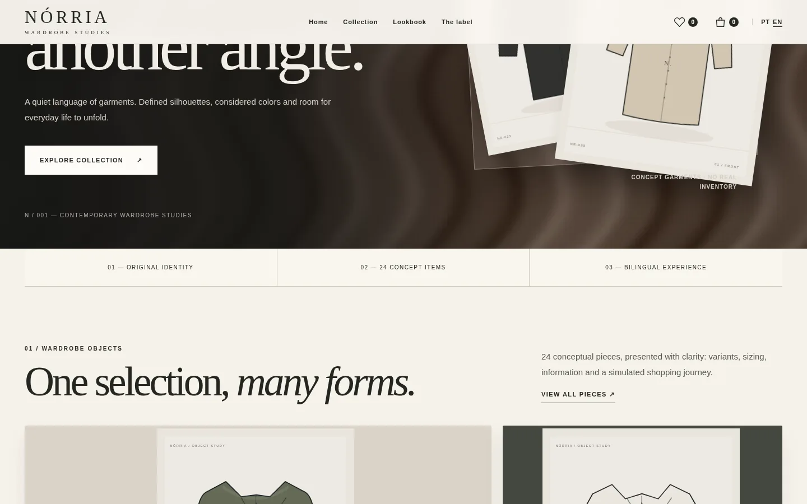
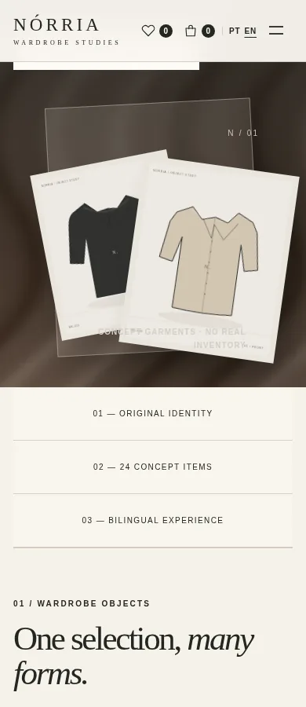

Editorial with direction
Campaign pages establish personality without hiding the path to shop.
Case study / 04 — 04
Fashion · Concept e-commerce
A contemporary wardrobe, in every interaction.
An original fashion concept with a browsable collection, product variants, saved items, a bag and demonstration checkout.

A clothing label needs a distinctive visual voice and simple answers: what pieces exist, what sizes are offered, which colours can be chosen and what is in the bag. The experience links editorial storytelling to these practical tasks.
People discovering contemporary essentials with an interest in materials, variants and a transparent shopping journey.
Identity, collection, 24 illustrated products, filters, saved items, bag and demonstration checkout.
Brand Design / E-commerce / UI/UX
Fashion-forward typography, textile textures and a charcoal, sand and copper palette create a distinctive world. The campaign sets the mood while the product interface makes colours, sizes and actions easy to understand.
Charcoal creates contrast; bronze adds warmth; sand keeps garments and interface elements prominent.
 01 — Visual direction
01 — Visual directionCampaign pages establish personality without hiding the path to shop.
Colour, size and quantity are explicit choices on each product.
Order summary, totals and confirmation remain understandable throughout the demo.
Campaign, collections and lookbook.
Search, filters, sorting and favourites.
Colour, size and quantity.
Persistent bag and demonstration checkout with no charge.
The catalogue and product detail translate a brand narrative into clear actions. The images below are captures of the implemented website.



An original fashion concept with a browsable collection, product variants, saved items, a bag and demonstration checkout.
Explore the experienceStyles with materials, demo prices and variants.
Discovery through filters and local saved items.
Add, remove, edit quantities and calculate totals.
Identity, delivery and review steps, with no real payment.
NÓRRIA demonstrates branding and a navigable commerce experience. Products are illustrated and checkout neither creates orders nor charges money.
About the imagery. Editorial imagery and illustrated garments are conceptual, not photographs of available stock.
Next project / 01 — 04
ESTARÉLIA